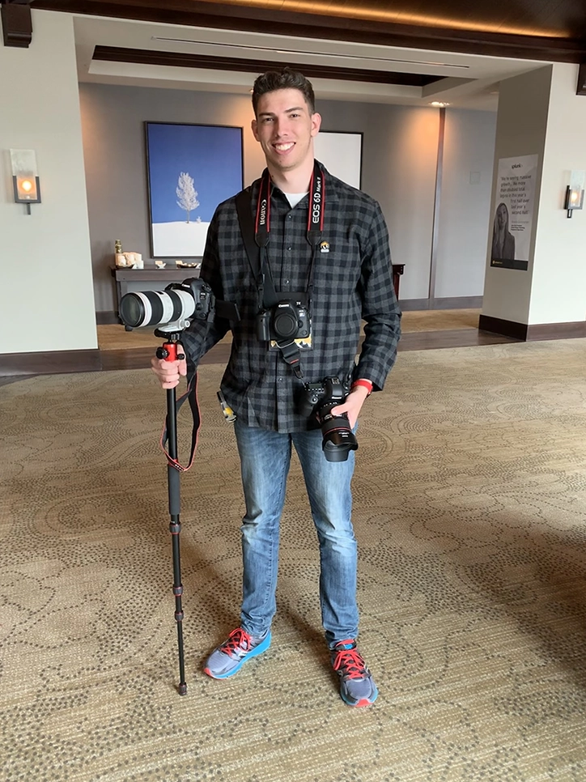

About Riley
I'm Riley, a creative mind with a passion for both the artistic and the technical. With skills in 3D modeling, 2D graphic design, and a love for world-building (especially in the realm of Dungeons & Dragons), I enjoy bringing imaginative ideas to life.
Whether it's crafting a new design in Blender or exploring coding in JavaScript, I love expanding my skill set and experimenting with new creative outlets. Beyond my work, I focus on keeping life balanced by enjoying the great Utah environment.
When I'm not busy, you might find me diving into a good book, experimenting with spells for D&D, or spending quality time with my wife, Lara.